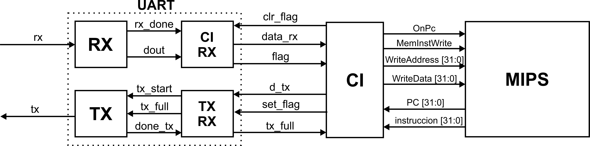

<section id="projects" class="container-fluid">
    <div class="row g-0">
        <div class="row">
            <h1>PROYECTOS</h1>
        </div>
        <div class="col-lg-12">
            <ul>
                <li class="col-12 card mb-3">
                    <div class="row g-0">
                        <div class="col-sm-3 d-flex align-items-center">
                            <div class="project-img"></div>
                        </div>
                        <div class="col-sm-9">
                            <div class="card-body">

                                <h2 class="card-title display-6 text-center">PIPELINE PROCESADOR MIPS SIMPLIFICADO</h2>
                                <p class="card-text fs-4">Implementación del Procesador MIPS Segmentado en las siguientes Etapas
                                    -IF (InstructionFetch): Búsqueda de la instrucción en la memoria de programa.
                                    -ID (InstructionDecode): Decodificación de la instrucción y lectura de registros.
                                    -EX (Excecute): Ejecución de la instrucción propiamente dicha.
                                    -MEM (MemoryAccess): Lectura o escritura desde/hacia la memoria de datos.
                                    -WB (Writeback): Escritura de resultados en los registros.</p>
                                <div class="col-sm">
                                    <p class="fs-4"><span class="fw-bolder">Se utilizó: </span>FPGA</p>
                                </div>
                            </div>
                        </div>
                    </div>
                </li>
            </ul>
        </div>
    </div>
</section>